第 6 讲：环境光照与预计算辐射传输（PRT）
用基函数把环境光照的积分变成点积，从而实时渲染带阴影和全局光照的环境光照
◆ 学完这一讲，你应该能
理解环境光照下阴影难以实时计算的原因（V 项不可分离、多光源成本线性增长）
掌握频率与滤波的直觉：低频=平滑，乘积积分相当于低通滤波
理解基函数展开（投影与重建）的思想，知道傅里叶级数是基函数的一种
了解球谐函数（SH）是球面上的 2D 基函数，具有正交、旋转、卷积等良好性质
理解 PRT 的核心：预计算光传输并投影到基函数空间，运行时只需点积或矩阵-向量乘法
能区分 diffuse 与 glossy 情况下 PRT 的运行时开销差异
核心结论速记
环境光照下的阴影实时计算非常困难：V 项任意复杂且无法与光照分离，多光源方法成本随光源数线性增长。
工业界常用方案是只从最亮的光源生成少量阴影；研究方案包括 imperfect shadow maps、light cuts、RTRT 和 PRT。
频率直觉：低频函数变化缓慢，高频函数变化剧烈；两个函数乘积的积分相当于低通滤波，结果频率取两者中较低者。
基函数是一组可以表示其他函数的函数，傅里叶级数就是一组基函数；用少量基函数可以保留低频内容。
球谐函数（SH）是定义在球面上的 2D 基函数，与一维傅里叶级数类似，具有正交性、简单投影/重建、简单旋转和卷积等性质。
PRT 将渲染方程中的光照和光传输分离：光照投影到 SH 空间得到系数，光传输预计算并投影到 SH 空间，运行时只需点积（diffuse）或矩阵-向量乘法（glossy）。
PRT 可以处理阴影和全局光照（互反射），代价是预计算和低频光照假设（不能处理高频动态光照）。
011. 环境光照下的阴影为什么难做
环境光照（environment lighting）是指用一张全景图（通常是 HDR）作为光源照亮场景。上一讲我们用 split sum 近似解决了没有阴影的环境光照着色问题，这一讲首先要补上阴影。
渲染方程中，环境光照下的着色可以写成： \[ L(o) = \int_{\Omega} L(i) \, V(i) \, \rho(i,o) \, \max(0, n \cdot i) \, di \] 其中 \(L(i)\) 是入射光照，\(V(i)\) 是可见性（阴影项），\(\rho\) 是 BRDF，\(n\) 是法线。
为什么难？有两个视角：
- 当作多光源问题：环境光照可以看成无数个光源，每个光源都需要一张 shadow map，成本随光源数量线性增长，实时无法承受。
- 当作采样问题：可见性项 \(V(i)\) 可以任意复杂（场景中任何物体都可能遮挡），而且 \(V\) 无法轻易从环境光照中分离出来——你不能把 \(V\) 提到积分外面。
工业界的务实做法：只从最亮的一两个光源（例如太阳）生成阴影，忽略环境光照中较暗部分产生的阴影。这在很多场景下视觉上可以接受。
研究界的方案包括：imperfect shadow maps（用低精度代理几何生成阴影）、light cuts（对光源聚类）、RTRT（实时光线追踪，可能是终极方案），以及本讲重点 PRT（预计算辐射传输）。
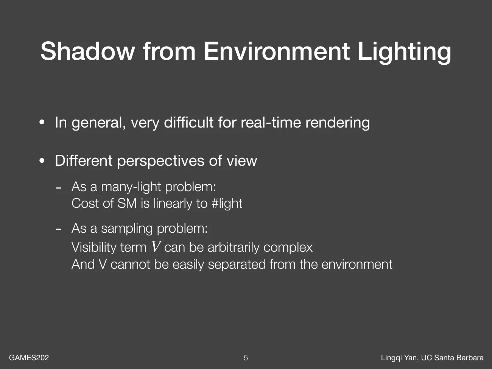
常见坑
误以为 split sum 近似能处理阴影 → split sum 只处理了光照与 BRDF 的分离，没有包含 V 项 → 需要阴影时得另寻方法（如 PRT 或 RTRT）。
把环境光照当成一个均匀光源 → 实际环境光照有方向性，最亮部分可能只占很小立体角 → 阴影方向会错。
UE / Unity 落地
UE：Sky Light 提供环境光照，但默认不产生动态阴影；需要阴影时可用 Ray Traced Shadows 或 Distance Field Shadows 近似。
Unity：Lighting 面板中的 Environment Lighting 只提供 ambient，实时阴影需靠方向光或 Reflection Probe 配合。
022. 频率与滤波：为什么积分会平滑
要理解 PRT，先要建立频率的直觉。
任何函数都可以分解成不同频率的正弦/余弦波叠加——这就是傅里叶变换（Fourier Transform）的思想。低频分量对应函数中变化缓慢的部分（平滑），高频分量对应剧烈变化的部分（细节、边缘）。
滤波（filtering） 就是去掉某些频率成分。低通滤波（low-pass filter）保留低频、去掉高频，效果就是模糊/平滑。
关键结论：两个函数乘积的积分可以看作一种滤波。考虑积分 \[ \int_{\Omega} f(x) g(x) \, dx \] 如果 \(f\) 是低频的、\(g\) 是高频的，那么乘积的积分结果主要由 \(f\) 的低频部分决定——高频部分被“平均掉”了。更准确地说，积分结果的频率是两者中较低的那个。
这个直觉在渲染中非常有用：diffuse BRDF 是一个低频函数（变化平缓），所以它与环境光照的积分结果也是低频的——这意味着我们可以用少量基函数来近似表示结果，而不损失太多精度。
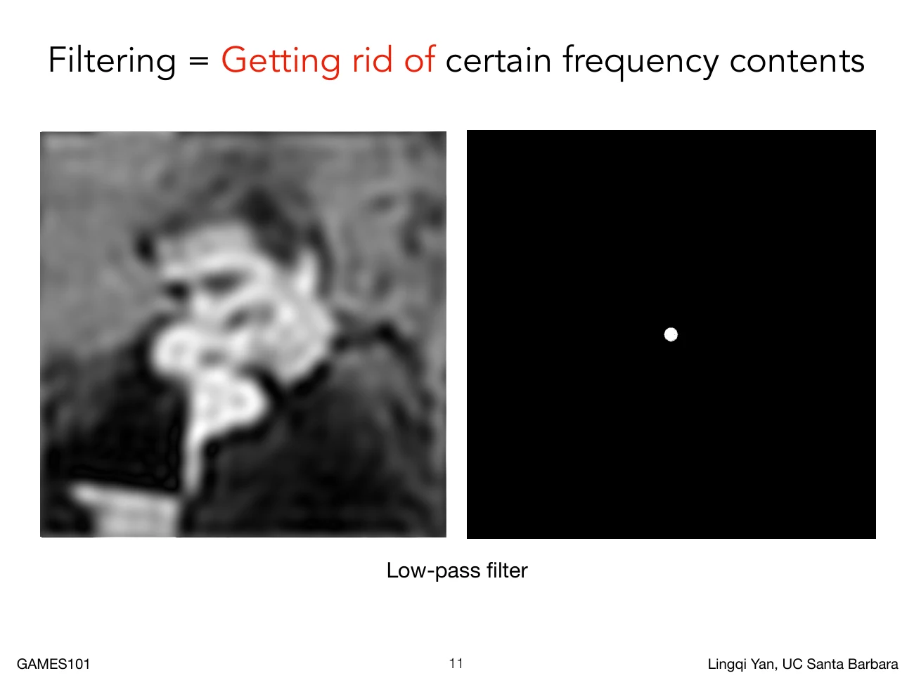
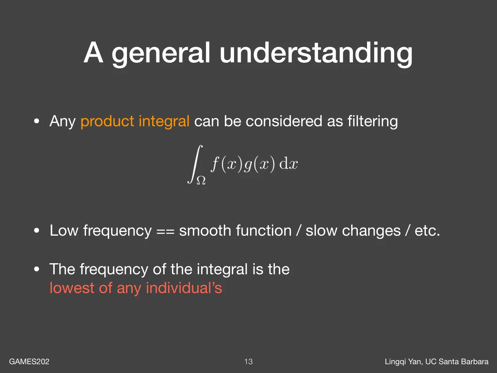
常见坑
误以为高频函数积分后一定还是高频 → 积分是低通操作，结果频率不会高于被积函数中最低的频率成分。
把“低频”等同于“亮度低” → 频率描述变化快慢，与亮度绝对值无关。
033. 基函数：用一组标准件表示任意函数
基函数（basis functions） 是一组固定的函数，任何其他函数都可以表示成它们的线性组合： \[ f(x) = \sum_i c_i B_i(x) \] 其中 \(B_i\) 是基函数，\(c_i\) 是系数。
傅里叶级数就是一组基函数（正弦和余弦），多项式序列也可以是一组基函数。基函数的核心价值在于：
- 用有限个基函数可以近似表示原函数；
- 保留低频基函数相当于低通滤波；
- 可以把积分运算转化为点积（系数向量的点积）。
在图形学中，我们常用球面基函数来表示方向性函数（如环境光照、BRDF、可见性）。球谐函数（SH）就是球面上最常用的一组基函数，下一节详细介绍。
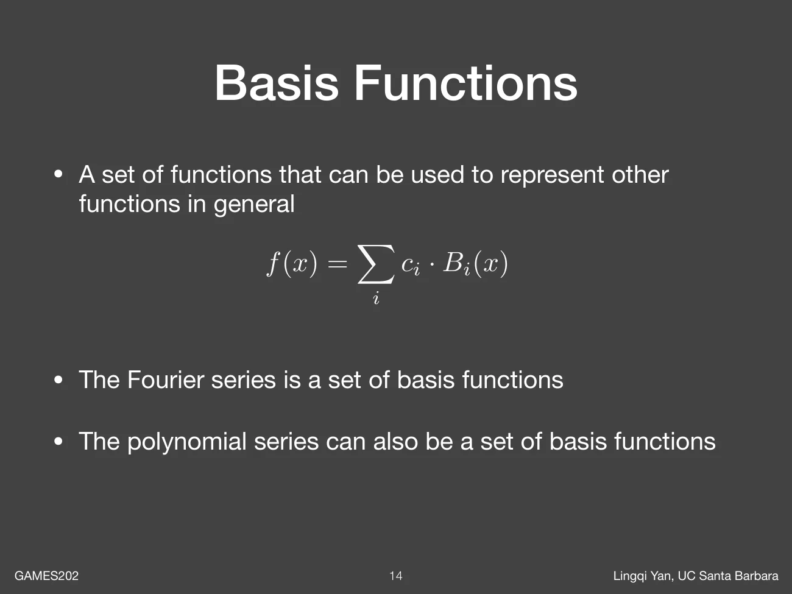
常见坑
基函数数量太少导致细节丢失 → 需要根据信号频率选择足够多的基函数；低频信号少量基函数即可。
误以为基函数必须正交 → 正交基函数性质更好（投影简单），但非正交基也可以用于表示。
044. 球谐函数（SH）：球面上的傅里叶
球谐函数（Spherical Harmonics, SH） 是定义在球面 \(S^2\) 上的一组 2D 基函数，可以看作一维傅里叶级数在球面上的推广。每个 SH 基函数 \(B_i(\omega)\) 由一个阶数 \(l\) 和指数 \(m\) 标记，其中 \(l \ge 0\)，\(-l \le m \le l\)。第 \(l\) 阶共有 \(2l+1\) 个基函数。
SH 的重要性质：
- 正交归一（orthonormal）：\(\int_{\Omega} B_i(\omega) B_j(\omega) d\omega = 1\) 当 \(i=j\)，否则为 0。
- 投影（projection）：给定函数 \(f(\omega)\)，系数 \(c_i = \int_{\Omega} f(\omega) B_i(\omega) d\omega\)。
- 重建（reconstruction）：\(f(\omega) \approx \sum_i c_i B_i(\omega)\)（截断到有限阶）。
- 简单旋转：SH 系数在旋转下可以高效变换。
- 简单卷积：与核函数卷积等价于系数相乘。
- 少量基函数即可表示低频：前几阶 SH 就能很好地近似平滑函数。
在实时渲染中，常用 3 阶（9 个系数）或 4 阶（16 个系数）SH 来表示低频环境光照。
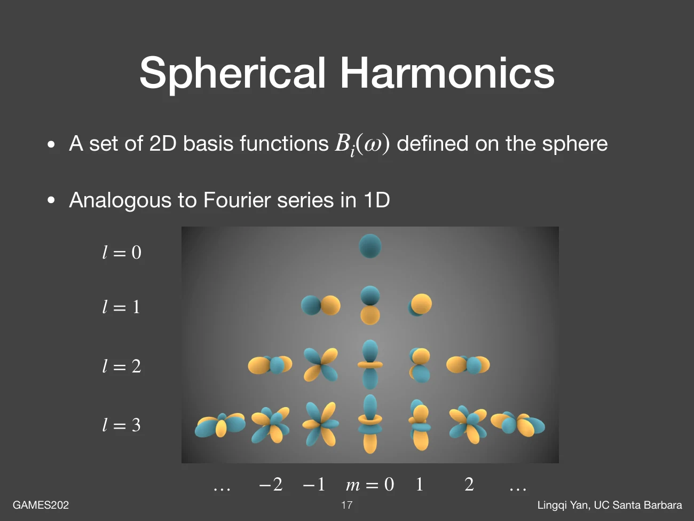
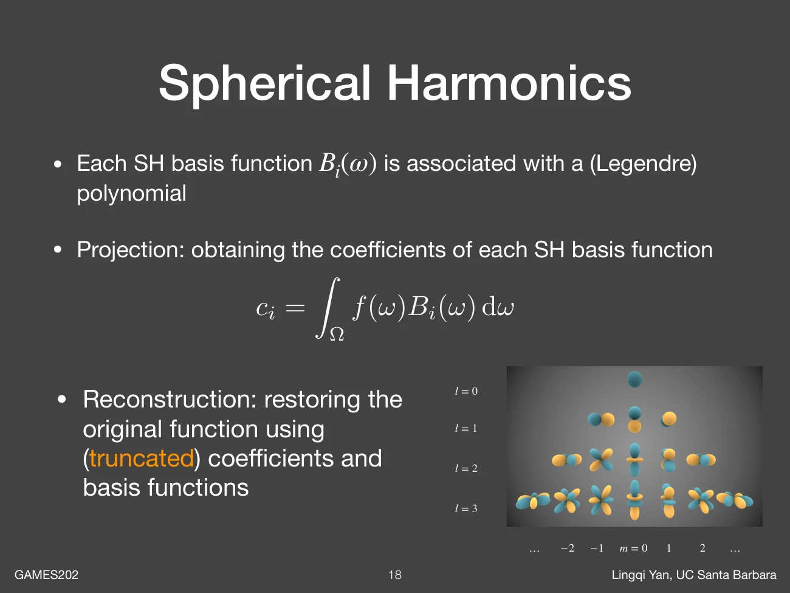
常见坑
SH 系数数量与阶数关系记错 → 第 l 阶有 2l+1 个基函数，前 L 阶共 L^2 个系数（如 3 阶=9 个）。
投影时忘记乘立体角权重 → 积分是在球面上进行，离散求和时需乘以每个采样方向的立体角。
UE / Unity 落地
UE：Lightmass 使用 SH 存储间接光照（Indirect Lighting Cache），可用
SH相关节点在材质中访问。Unity：Light Probes 使用 3 阶 SH（L2）存储环境光照，
ShadeSH9函数在 shader 中重建。
055. 用 SH 做环境光照着色：从积分到点积
把 SH 用到环境光照着色上，思路是：把光照 \(L(i)\) 和光传输（包含 BRDF、余弦项、可见性）都投影到 SH 空间，然后运行时只需计算系数点积。
先看没有阴影的 diffuse 情况。渲染方程简化为： \[ L(o) = \rho \int_{\Omega} L(i) \max(0, n \cdot i) \, di \] 把 \(L(i)\) 用 SH 展开：\(L(i) \approx \sum_i l_i B_i(i)\)。代入得： \[ L(o) \approx \rho \sum_i l_i \int_{\Omega} B_i(i) \max(0, n \cdot i) \, di \] 定义传输系数 \(T_i = \int_{\Omega} B_i(i) \max(0, n \cdot i) \, di\)，则 \(L(o) \approx \rho \sum_i l_i T_i\)。
对于 diffuse，\(T_i\) 有解析解：\(T_i\) 只与法线方向有关，且可以用一个 3x3 矩阵 \(M\) 表示，最终 \(E(n) = n^T M n\)。这就是著名的 Ramamoorthi & Hanrahan 解析 irradiance 公式：diffuse BRDF 像一个低通滤波器，所以只需要前 3 阶（9 个系数）SH 就能以小于 1% 的 RMS 误差重建 irradiance。
对于 glossy，BRDF 不是低频，需要更多 SH 系数，运行时是矩阵-向量乘法而不是点积。
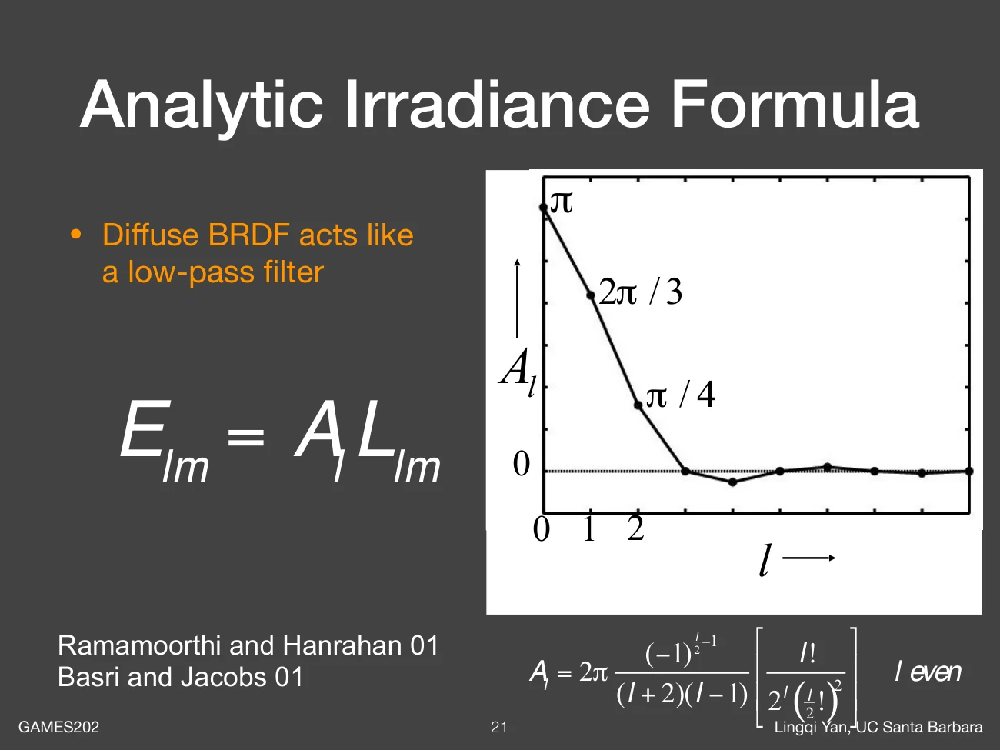
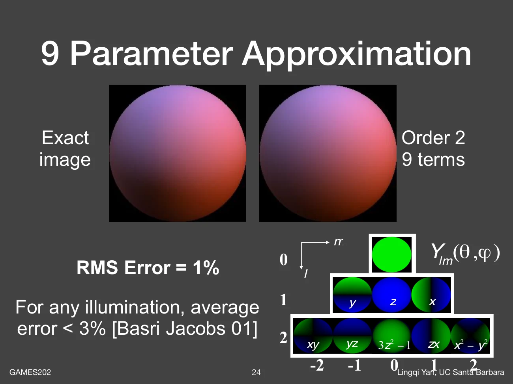
常见坑
把 diffuse 的 3 阶 SH 结论直接套用到 glossy → glossy 需要更高阶 SH，否则高光会糊掉。
法线未归一化就代入 \(E(n)=n^T M n\) → 结果亮度错误 → 确保法线是单位向量。
UE / Unity 落地
UE：材质中的
Indirect Lighting使用 SH 近似，diffuse 环境光照就是低频的。Unity：
ShadeSH9用 3 阶 SH 重建环境光照，适用于 diffuse。
066. PRT：把阴影和全局光照预计算掉
前面没有考虑可见性 \(V(i)\)。预计算辐射传输（Precomputed Radiance Transfer, PRT） 由 Sloan 在 SIGGRAPH 2002 提出，核心思想是把渲染方程中的光照和光传输分离，并分别投影到基函数空间。
渲染方程： \[ L(o) = \int_{\Omega} L(i) \, V(i) \, \rho(i,o) \, \max(0, n \cdot i) \, di \] 把 \(L(i)\) 用 SH 展开：\(L(i) \approx \sum_i l_i B_i(i)\)。代入： \[ L(o) \approx \sum_i l_i \int_{\Omega} B_i(i) \, V(i) \, \rho(i,o) \, \max(0, n \cdot i) \, di \] 定义传输系数（light transport）： \[ T_i = \int_{\Omega} B_i(i) \, V(i) \, \rho(i,o) \, \max(0, n \cdot i) \, di \] 则 \(L(o) \approx \sum_i l_i T_i\)。
预计算阶段：对场景中每个顶点/像素，计算 \(T_i\)（包含阴影、互反射等全局光照效果），并存储起来。 运行时阶段：把当前环境光照投影到 SH 得到 \(l_i\)，然后计算点积 \(\sum_i l_i T_i\)。
对于 diffuse，\(T_i\) 与视角无关，每个点存一组系数即可，运行时是点积。对于 glossy，\(T_i\) 还依赖视角，需要为每个视角方向存一组系数，运行时是矩阵-向量乘法。
PRT 的代价：预计算耗时、存储量大、只能处理低频光照（因为 SH 截断），且场景几何和材质必须静态。
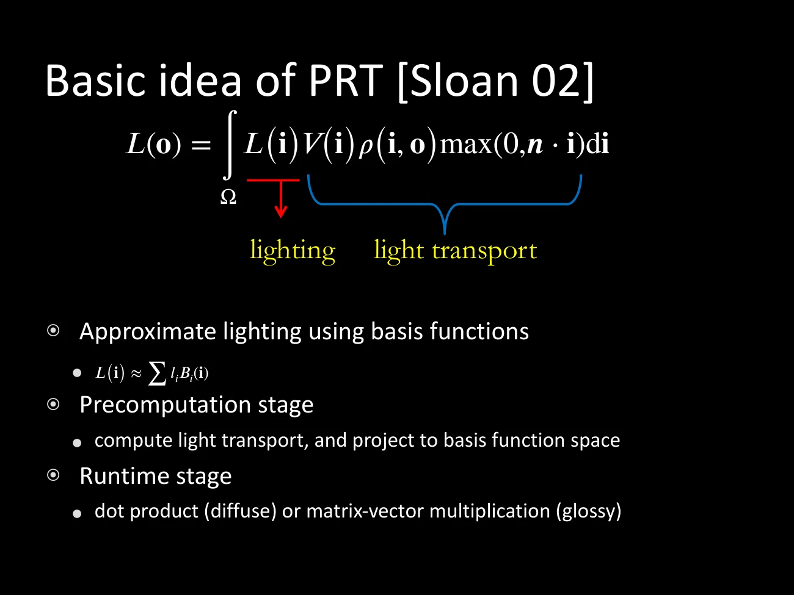
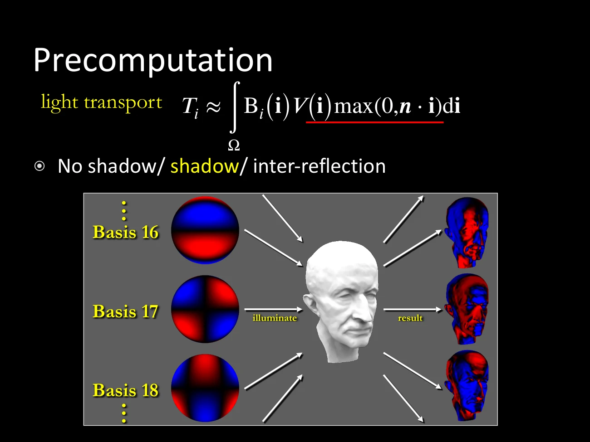
常见坑
PRT 处理动态光照时直接重新投影 → 开销大；正确做法是旋转光照的 SH 系数（SH 旋转性质）。
把 PRT 用于高频光照（如锐利点光源）→ SH 截断导致错误；PRT 假设低频光照。
UE / Unity 落地
UE：Lightmass 的间接光照缓存使用类似 PRT 的思想（预计算传输），但 UE 更常用 Lightmap + SH。
Unity：Light Probes 和 Lightmaps 是预计算全局光照的工业实现，与 PRT 同源。
077. 运行时渲染与效果对比
PRT 的运行时着色非常简单：
- 把环境光照投影到 SH 得到系数 \(l_i\)（或者直接旋转已有的 SH 系数）。
- 对每个着色点，计算 \(L(o) \approx \rho \sum_i l_i T_i\)。
对于 diffuse，这就是一个点积，可以在 shader 中高效实现。对于 glossy，\(T_i\) 是矩阵（每个视角方向一组系数），运行时是矩阵-向量乘法，仍然很快。
效果上，PRT 可以渲染出：
- 无阴影（no shadows）
- 有阴影（shadows）
- 阴影+互反射（shadows + inter-reflection）
这比单纯的环境光照着色（split sum）多了阴影和全局光照，而且仍然是实时的。但代价是：预计算时间长、存储量大、只能处理低频光照、场景必须静态。
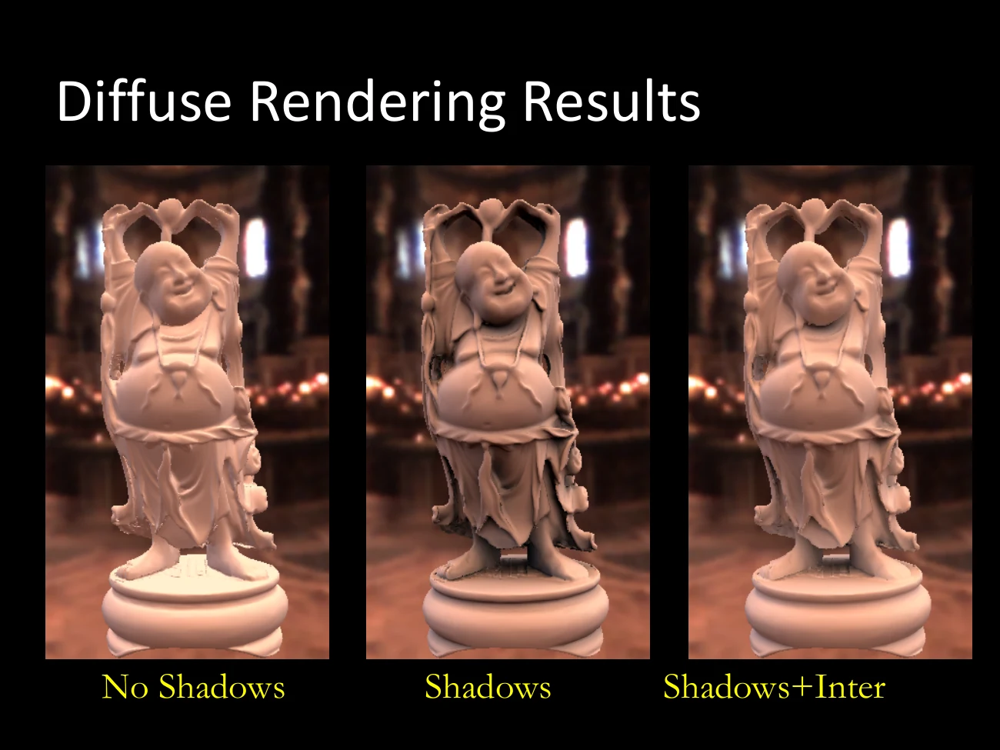
常见坑
误以为 PRT 可以处理动态物体 → PRT 预计算基于静态场景，动态物体需要其他方法（如动态环境光探针）。
存储传输系数时精度不够导致漏光 → 使用合适的数据格式（如 half 或压缩）并验证。
UE / Unity 落地
UE：对于静态场景，Lightmass 可以预计算类似 PRT 的全局光照；动态物体用 Light Probe 近似。
Unity：Baked GI 类似 PRT 的预计算思路，但 Unity 的 Progressive Lightmapper 更通用。
引擎对照表
| 概念 / 效果 | Unreal Engine | Unity |
|---|---|---|
环境光照 | Sky Light + Sky Atmosphere | Environment Lighting (Skybox) |
球谐函数存储环境光 | Indirect Lighting Cache (SH) | Light Probes (L2 SH) |
预计算全局光照 | Lightmass (Static Lighting) | Baked GI (Progressive Lightmapper) |
环境光阴影 | Ray Traced Shadows / Distance Field Shadows | Ray Tracing (HDRP) / Screen Space Shadows |
动态环境光反射 | Reflection Capture / Lumen | Reflection Probe / SSGI |
术语双语表
| English | 中文 | 说明 |
|---|---|---|
| Environment Lighting | 环境光照 | 用全景图作为光源照亮场景。 |
| Fourier Transform | 傅里叶变换 | 把函数分解为不同频率正弦/余弦波叠加。 |
| Low-pass Filter | 低通滤波 | 保留低频、去掉高频，使信号平滑。 |
| Basis Functions | 基函数 | 一组标准函数，可线性组合表示其他函数。 |
| Spherical Harmonics (SH) | 球谐函数 | 球面上的正交基函数，常用于表示低频方向性信号。 |
| Projection | 投影 | 求函数在基函数上的系数：积分 f*B。 |
| Reconstruction | 重建 | 用系数和基函数恢复原函数。 |
| Precomputed Radiance Transfer (PRT) | 预计算辐射传输 | 预计算光传输并投影到基函数，运行时点积。 |
| Light Transport | 光传输 | 包含可见性、BRDF、余弦项的积分核。 |
| Irradiance | 辐照度 | 单位面积接收的光功率，diffuse 着色常用。 |
课后练习
01 为什么环境光照下的阴影难以实时计算？请从多光源和采样两个角度解释。
查看答案
提示：
考虑 shadow map 成本和 V 项的可分离性。
多光源角度：环境光照可视为无数光源，每个光源需要 shadow map，成本随光源数线性增长，实时不可行。采样角度：可见性 V(i) 任意复杂，且 V 无法从光照积分中分离出来，不能像 split sum 那样近似。
02 用 3 阶 SH（9 个系数）表示环境光照，投影和重建的公式分别是什么？
查看答案
提示：
投影是积分，重建是求和。
投影：c_i = ∫Ω L(ω) B_i(ω) dω；重建：L(ω) ≈ Σ c_i B_i(ω)。}^{8
03 PRT 的预计算阶段和运行时阶段分别做什么？diffuse 和 glossy 的运行时计算有何不同？
查看答案
提示：
考虑传输系数 T_i 是否依赖视角。
预计算：对每个点计算传输系数 T_i = ∫ B_i(i) V(i) ρ(i,o) max(0,n·i) di，并存储。运行时：将光照投影到 SH 得到 l_i，然后计算 L(o) ≈ Σ l_i T_i。Diffuse 时 T_i 与视角无关，运行时是点积；glossy 时 T_i 依赖视角，运行时是矩阵-向量乘法。
04 在 Unity 中，Light Probes 使用几阶 SH？如何在 shader 中重建环境光照？
查看答案
提示：
Unity 内置函数 ShadeSH9。
Unity Light Probes 使用 3 阶（L2）SH，共 9 个系数。在 shader 中调用 ShadeSH9(float4(normal,1)) 即可重建环境光照。
05 PRT 有哪些局限性？举出至少两点。
查看答案
提示：
考虑动态性、频率、存储。
1) 只能处理低频光照（SH 截断），高频光源（如锐利点光源）会出错；2) 场景几何和材质必须静态，预计算基于静态场景；3) 存储量大，每个点需要存储一组传输系数；4) 预计算耗时。